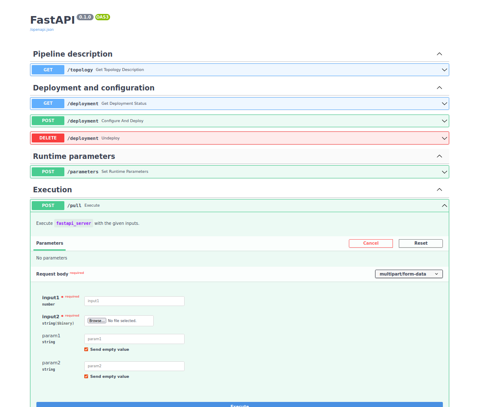

HTTP API generation basics¶
PyPipeline can fully auto-generate a FastAPI HTTP interface on top of your pipeline, including interactive docs.
Warning
TODO: this feature is still under development. Docs will follow later. For a glimpse of what it will look like: see tests/pypipeline_serve_tests/test_01_standard_server.py.

Teaser of the interactive docs (work in progress)¶